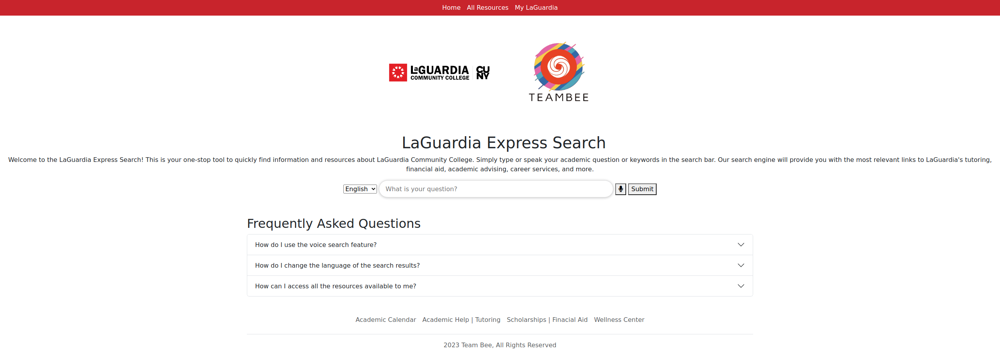

My Portfolio
LaGuardia Express Search
LaGuardia Express Search is a powerful tool designed to help LaGuardia Community College students quickly find the information and resources they need. Our application offers both text-based search and speech-to-text search capabilities for English, Spanish, and Chinese languages.
LaGuardia Express Search works by using the powerful GPT-3 natural language processing engine to provide quick and accurate responses to user queries. Users simply enter a search term, and our application will provide a response with relevant links to LaGuardia's tutoring, financial aid, academic advising, career services, and other important resources.
WorkMap
WorkMap is a personal project I embarked on to help immigrants, students and many others find job opportunities.
WorkMap works by using web scraping technologies along with Google Maps to help find job openings wherever they might be. Users simply enable their location and can find a variety of locations that are hiring. There are filters for specified job searches, and help resources to help users find their desired job.